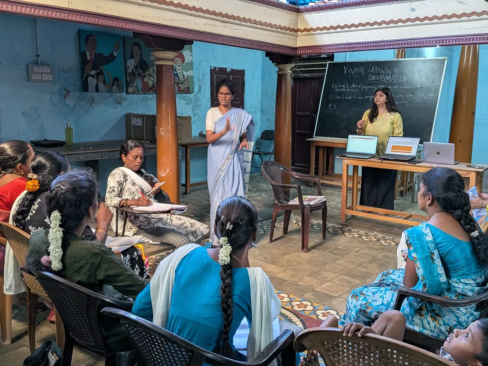
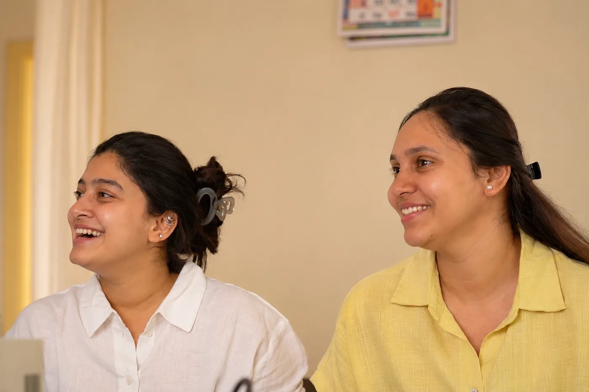

why kickstarter exists
Measuring impact should not depend on the size of your organisation.
Early-stage nonprofits are often creating meaningful change long before they have the systems needed to demonstrate it. Programme information is spread across spreadsheets, forms, messages and individual team members, and important patterns are noticed late.
Kickstarter helps you build a foundation for data-driven decision making early, before fragmented processes become expensive, complicated systems.

Vanavil Trust Apni Shala Foundation
Apni Shala Foundation
Kickstarter may be right for you if any of these sound familiar.
Each one is a sign your programme has outgrown its spreadsheets, and that your team needs a more robust system that reflects how you work and actually helps you use what data you collect.
Kickstarter gives you more than just a dashboard. It helps build a decision infrastructure within your organization.
how the program works
Four stages, one connected system.
See what organisations have done with a
stronger data foundation.

ArtsKickstarter cohort 1 Baithak Foundation Using a more accessible data system in programme and funder conversations. Read the case study EducationKickstarter cohort 1
Apni Shala Foundation
Using a priority learning metric to identify student needs earlier and plan interventions.
Read the case study
EducationKickstarter cohort 1
Apni Shala Foundation
Using a priority learning metric to identify student needs earlier and plan interventions.
Read the case study
Ready to turn messy data into a system you can actually get insights from?
Build a system that helps your team see what matters, act earlier and communicate your impact with confidence.